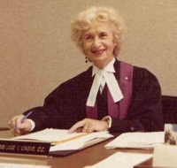
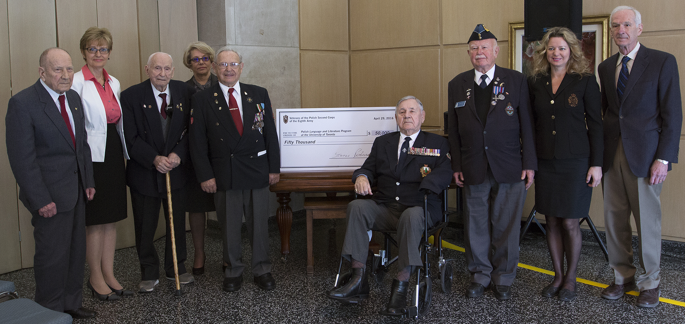
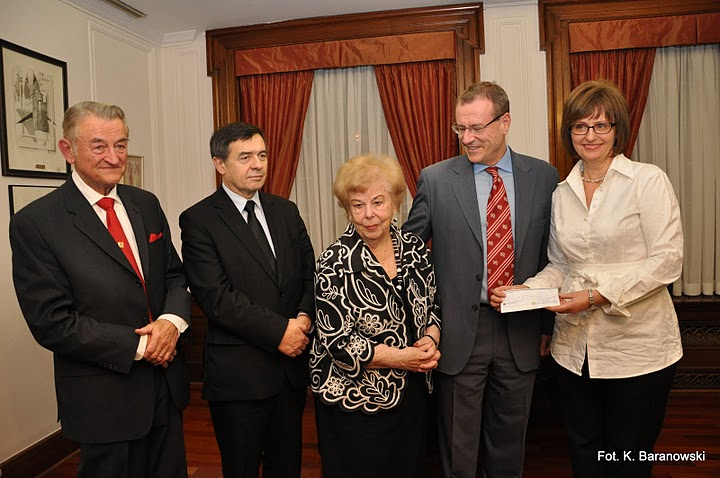
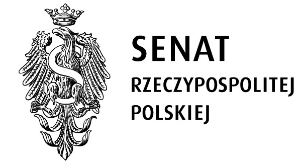
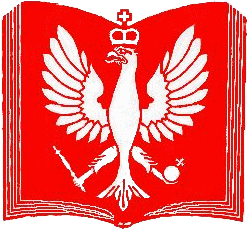
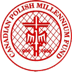
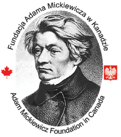
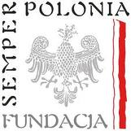

Our donors
The Polish Language and Literature Program gratefully acknowledges the financial support from the following:
Slaby-Ungar Endowment Fund for Polish Language and Literature
created by Henry Slaby and Irene Ungar specially for the purpose of financing the Polish language courses Henry Slaby (1925-2014)
Henry Slaby (1925-2014)
Henry Slaby was involved in Polish underground operations
for which he was arrested by the Germans and sent to Auschwitz. When
moved to Flosenburg, he escaped, joined the Polish Army in Italy and
found himself in Great Britain after the war ended. In Britain he
completed his education in business administration and became a
Chartered Accountant. After coming to Canada in 1955, he settled in
Toronto where in 1961 he started his own accounting business. In the
1970s, Henry Slaby, by then a very successful, independent businessman,
became involved in community service and politics. The list of his
accomplishments in these areas is very impressive. He chaired multiple
fundraising committees and was essential to completing the fundraising
tasks both in Poland and in Canada. His involvement in Poland includes
the restoration of the Royal Castle in Warsaw, a multimillion dollar
fundraising for the John Paul Collegium Building at the Catholic
University of Lublin, and recently the development of the Canadian
Studies Program at the Jagiellonian University in Kraków. The Canadian
initiatives include the establishment of the Polish TV program and the
Polish theater, the building of the Polish senior house (Copernicus
Lodge), the Maximilian Kolbe Foundation and the building of the John
Paul II Polish Cultural Center in Mississauga, the fundraising for the
Chair of Polish History, many years of active participation in the
Władysław and Nelli Turzański Foundation, and the establishment of the
Slaby and Ungar Fund for the Polish Language and Literature Program at
UofT. Henry Slaby was also actively involved in provincial and federal
politics (Liberal Party) as CFO, agent and auditor. His many
accomplishments were honored by the Queen (Outstanding Citizen Medal),
the Provincial and Municipal authorities, the Catholic University of
Lublin (Gold Medal for services and Doctor Honoris Causa as well as the
title of Protector Universitatis), government of Poland (Commander's
Cross of the Order of Merit with Star), and by the Holy Father, John
Paul II (the Honor of Knight Commander of the Order of St. Gregory the
Great).
Irena
Ungar (1916-2002)
nee Kolankiewicz, wife of Wacław Ungar, a
Squadron Leader of the Polish Air Force, a participant in the Battle of
Britain. She left Poland in 1939 and her journey through Romania,
Yugoslavia, Italy, France and Portugal brought her to Canada in 1941.
She was fluent in five languages and had a remarkable professional
career spanning from intelligence service for the Allies during the
war, through journalism, administration, immigration services,
diplomacy, and finally to her position as a Canadian Citizenship judge.
She was a philanthropist, a community leader, and a great patriot. Her
many involvements included several Boards of Directors: of the
Copernicus Lodge and International Institute of Metropolitan Toronto.
She was chairing or vice-chairing important organizations:
Polish-Canadian Congress (Toronto District), Canadian Polish Women
Federation, Academic Disciplinary Tribunal at UofT, and the Advisory
Board of the Community Folk Arts Council of Metropolitan Toronto. She
was essential in establishing the Slaby/Ungar Fund for the Polish
Language and Literature Program at UofT. She received an honorary
membership in the Association of Polish Engineers in Canada and gold
insignia of the Royal Canadian Air Force Association. For her
leadership and life accomplishments she was awarded the gold medal of
the Canadian-Polish Congress, the Medal of Service of the Order of
Canada, the Golden Cross of Merit (from the Polish government in
exile), and a medal Sursum Corda from the government of the Polish
Republic for her life contribution to culture and community service.
A gift from Veterans of the Polish Second Corps of the Eighth Army to the Polish Language and Literature Program at the University of Toronto

At a ceremony in April, 2016, Veterans of the Polish Second Corps of the Eighth Army presented the university with a cheque for $50,000 to support the Polish Language and Literature Program at U of T.
“Four generations owe peace, freedom and prosperity to these men and their brothers-in-arms who died on the fronts of World War II. Today, to those priceless gifts they are adding one more — their generous support for the Polish Language and Literature Program at the University of Toronto. Theirs is a generation of truly unmatched givers.”
- Tamara Trojanowska, director of the Polish Language and Literature Program
Borys Wrzesnewskyj's gift to the Polish Studies at the University of Toronto

A $35,000 gift from Borys Wrzesnewskyj, MP for
Etobicoke Centre and owner of Future Bakery and M-C Dairy, and his
family will support the teaching of Polish language at the University
of Toronto. The gift, which establishes the Roman Wrzesnewskyj Polish
Endowment Fund , pays tribute to Mr. Wrzesnewskyj's father, who passed
away in 2009. Mr. Wrzesnewskyj presented the gift to the University at
a special reception held at the home of the Polish Consul General in
Toronto on December 17.
Canada's Polonia community, of which Mr. Wrzesnewskyj is a
distinguished member, has played a significant role in building this
country and strengthening its cultural mosaic ever since the first
major Polish-group settlers arrived in Ontario in the 19 th century.
They include such notables as Alexandre Édouard Kierzkowski, the first
MP of Polish descent who served in Canada's inaugural parliament, and
the hundreds of thousands of immigrants who have worked as labourers
and professionals in every sector. Among them are Mr. Wrzesnewskyj's
grandfather, Felix, who founded Future Bakery, and his father, Roman.
“I fondly remember my father patiently teaching me and correcting my
Polish,” says Mr. Wrzesnewskyj. “It is with the contributions of Polish
Canadians to Canada in mind that our family is making this contribution
to the Polish Endowment Fund at U of T. And it is with fond memories of
my late father, Roman, that it is being named in his honour.”
Chancellary of the Polish Senate

Canadian - Polish Congress
through the
Council for Support of Polish Studies at the University of Toronto

For more information about the Council's support for the Polish
Language and Literature program at UofT, please go to http://csps.kpk.org or
visit the Council's
facebook page
The Canadian-Polish Millennium Fund in Toronto

The Adam Mickiewicz Foundation in Toronto

Fundacja Semper Polonia

For more information on the Semper Polonia Foundation please go to http://www.semperpolonia.pl